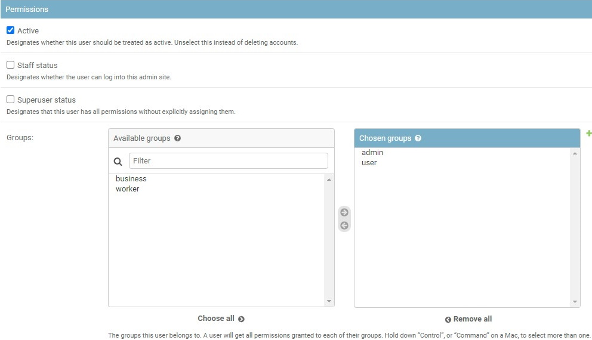

This the multi-page printable view of this section. Click here to print.
Basics
1 - Installation Guide
Quick installation guide
Before you can use CVAT, you’ll need to get it installed. The document below contains instructions for the most popular operating systems. If your system is not covered by the document it should be relatively straightforward to adapt the instructions below for other systems.
Probably you need to modify the instructions below in case you are behind a proxy server. Proxy is an advanced topic and it is not covered by the guide.
For access from China, read sources for users from China section.
Ubuntu 18.04 (x86_64/amd64)
-
Open a terminal window. If you don’t know how to open a terminal window on Ubuntu please read the answer.
-
Type commands below into the terminal window to install Docker and Docker Compose. More instructions can be found here.
sudo apt-get update sudo apt-get --no-install-recommends install -y \ apt-transport-https \ ca-certificates \ curl \ gnupg-agent \ software-properties-common curl -fsSL https://download.docker.com/linux/ubuntu/gpg | sudo apt-key add - sudo add-apt-repository \ "deb [arch=amd64] https://download.docker.com/linux/ubuntu \ $(lsb_release -cs) \ stable" sudo apt-get update sudo apt-get --no-install-recommends install -y \ docker-ce docker-ce-cli containerd.io docker-compose-plugin -
Perform post-installation steps to run docker without root permissions.
sudo groupadd docker sudo usermod -aG docker $USERLog out and log back in (or reboot) so that your group membership is re-evaluated. You can type
groupscommand in a terminal window after that and check ifdockergroup is in its output. -
Clone CVAT source code from the GitHub repository with Git.
Following command will clone the latest develop branch:
git clone https://github.com/opencv/cvat cd cvatSee alternatives if you want to download one of the release versions or use the
wgetorcurltools. -
To access CVAT over a network or through a different system, export
CVAT_HOSTenvironment variableexport CVAT_HOST=your-ip-address -
Run docker containers. It will take some time to download the latest CVAT release and other required images like postgres, redis, etc. from DockerHub and create containers.
docker compose up -d -
(Optional) Use
CVAT_VERSIONenvironment variable to specify the version of CVAT you want to install specific version (e.gv2.1.0,dev). Default behavior:devimages will be pulled for develop branch, and corresponding release images for release versions.CVAT_VERSION=dev docker compose up -d -
Alternative: if you want to build the images locally with unreleased changes see How to pull/build/update CVAT images section
-
You can register a user but by default, it will not have rights even to view the list of tasks. Thus you should create a superuser. A superuser can use an admin panel to assign the correct groups to the user. Please use the command below:
docker exec -it cvat_server bash -ic 'python3 ~/manage.py createsuperuser'Choose a username and a password for your admin account. For more information please read Django documentation.
-
Google Chrome is the only browser that is supported by CVAT. You need to install it as well. Type commands below in a terminal window:
curl https://dl-ssl.google.com/linux/linux_signing_key.pub | sudo apt-key add - sudo sh -c 'echo "deb [arch=amd64] http://dl.google.com/linux/chrome/deb/ stable main" >> /etc/apt/sources.list.d/google-chrome.list' sudo apt-get update sudo apt-get --no-install-recommends install -y google-chrome-stable -
Open the installed Google Chrome browser and go to localhost:8080. Type your login/password for the superuser on the login page and press the Login button. Now you should be able to create a new annotation task. Please read the CVAT manual for more details.
Windows 10
-
Install WSL2 (Windows subsystem for Linux) refer to this official guide. WSL2 requires Windows 10, version 2004 or higher. After installing WSL2, install a Linux Distribution of your choice.
-
Download and install Docker Desktop for Windows. Double-click
Docker for Windows Installerto run the installer. More instructions can be found here. Official guide for docker WSL2 backend can be found here. Note: Check that you are specifically using WSL2 backend for Docker. -
In Docker Desktop, go to
Settings >> Resources >> WSL Integration, and enable integration with the Linux Distribution that you chose. -
Download and install Git for Windows. When installing the package please keep all options by default. More information about the package can be found here.
-
Download and install Google Chrome. It is the only browser which is supported by CVAT.
-
Go to windows menu, find the Linux distribution you installed and run it. You should see a terminal window.
-
Clone CVAT source code from the GitHub repository.
The following command will clone the latest develop branch:
git clone https://github.com/opencv/cvat cd cvatSee alternatives if you want to download one of the release versions.
-
Run docker containers. It will take some time to download the latest CVAT release and other required images like postgres, redis, etc. from DockerHub and create containers.
docker compose up -d -
(Optional) Use
CVAT_VERSIONenvironment variable to specify the version of CVAT you want to install specific version (e.gv2.1.0,dev). Default behavior:devimages will be pulled for develop branch, and corresponding release images for release versions.CVAT_VERSION=dev docker compose up -d -
Alternative: if you want to build the images locally with unreleased changes see How to pull/build/update CVAT images section
-
You can register a user but by default, it will not have rights even to view the list of tasks. Thus you should create a superuser. A superuser can use an admin panel to assign correct groups to other users. Please use the command below:
sudo docker exec -it cvat_server bash -ic 'python3 ~/manage.py createsuperuser'If you don’t have winpty installed or the above command does not work, you may also try the following:
# enter docker image first docker exec -it cvat_server /bin/bash # then run python3 ~/manage.py createsuperuserChoose a username and a password for your admin account. For more information please read Django documentation.
-
Open the installed Google Chrome browser and go to localhost:8080. Type your login/password for the superuser on the login page and press the Login button. Now you should be able to create a new annotation task. Please read the CVAT manual for more details.
Mac OS Mojave
-
Download Docker for Mac. Double-click Docker.dmg to open the installer, then drag Moby the whale to the Applications folder. Double-click Docker.app in the Applications folder to start Docker. More instructions can be found here.
-
There are several ways to install Git on a Mac. The easiest is probably to install the Xcode Command Line Tools. On Mavericks (10.9) or above you can do this simply by trying to run git from the Terminal the very first time.
git --versionIf you don’t have it installed already, it will prompt you to install it. More instructions can be found here.
-
Download and install Google Chrome. It is the only browser which is supported by CVAT.
-
Open a terminal window. The terminal app is in the Utilities folder in Applications. To open it, either open your Applications folder, then open Utilities and double-click on Terminal, or press Command - spacebar to launch Spotlight and type “Terminal,” then double-click the search result.
-
Clone CVAT source code from the GitHub repository with Git.
The following command will clone the latest develop branch:
git clone https://github.com/opencv/cvat cd cvatSee alternatives if you want to download one of the release versions or use the
wgetorcurltools. -
Run docker containers. It will take some time to download the latest CVAT release and other required images like postgres, redis, etc. from DockerHub and create containers.
docker compose up -d -
(Optional) Use
CVAT_VERSIONenvironment variable to specify the version of CVAT you want to install specific version (e.gv2.1.0,dev). Default behavior:devimages will be pulled for develop branch, and corresponding release images for release versions.CVAT_VERSION=dev docker compose up -d -
Alternative: if you want to build the images locally with unreleased changes see How to pull/build/update CVAT images section
-
You can register a user but by default, it will not have rights even to view the list of tasks. Thus you should create a superuser. A superuser can use an admin panel to assign correct groups to other users. Please use the command below:
docker exec -it cvat_server bash -ic 'python3 ~/manage.py createsuperuser'Choose a username and a password for your admin account. For more information please read Django documentation.
-
Open the installed Google Chrome browser and go to localhost:8080. Type your login/password for the superuser on the login page and press the Login button. Now you should be able to create a new annotation task. Please read the CVAT manual for more details.
Advanced Topics
How to get CVAT source code
Git (Linux, Mac, Windows)
-
Install Git on your system if it’s not already installed
- Ubuntu:
sudo apt-get --no-install-recommends install -y git- Windows: Follow instructions from https://git-scm.com/download/win
-
Clone CVAT source code from the GitHub repository.
The command below will clone the default branch (develop):
git clone https://github.com/opencv/cvat cd cvatTo clone specific tag, e.g. v2.1.0:
git clone -b v2.1.0 https://github.com/opencv/cvat cd cvat
Wget (Linux, Mac)
To download latest develop branch:
wget https://github.com/opencv/cvat/archive/refs/heads/develop.zip
unzip develop.zip && mv cvat-develop cvat
cd cvat
To download specific tag:
wget https://github.com/opencv/cvat/archive/refs/tags/v1.7.0.zip
unzip v1.7.0.zip && mv cvat-1.7.0 cvat
cd cvat
Curl (Linux, Mac)
To download the latest develop branch:
curl -LO https://github.com/opencv/cvat/archive/refs/heads/develop.zip
unzip develop.zip && mv cvat-develop cvat
cd cvat
To download specific tag:
curl -LO https://github.com/opencv/cvat/archive/refs/tags/v1.7.0.zip
unzip v1.7.0.zip && mv cvat-1.7.0 cvat
cd cvat
CVAT healthcheck command
The following command allows testing the CVAT container to make sure it works.
docker exec -t cvat_server python manage.py health_check
The expected output of a healthy CVAT container:
Cache backend: default ... working
DatabaseBackend ... working
DiskUsage ... working
MemoryUsage ... working
MigrationsHealthCheck ... working
OPAHealthCheck ... working
Deploying CVAT behind a proxy
If you deploy CVAT behind a proxy and do not plan to use any of serverless functions
for automatic annotation, the exported environment variables
http_proxy, https_proxy and no_proxy should be enough to build images.
Otherwise please create or edit the file ~/.docker/config.json in the home directory of the user
which starts containers and add JSON such as the following:
{
"proxies": {
"default": {
"httpProxy": "http://proxy_server:port",
"httpsProxy": "http://proxy_server:port",
"noProxy": "*.test.example.com,.example2.com"
}
}
}
These environment variables are set automatically within any container. Please see the Docker documentation for more details.
Using the Traefik dashboard
If you are customizing the docker compose files and you come upon some unexpected issues, using the Traefik dashboard might be very useful to see if the problem is with Traefik configuration, or with some of the services.
You can enable the Traefik dashboard by uncommenting the following lines from docker-compose.yml
services:
traefik:
# Uncomment to get Traefik dashboard
# - "--entryPoints.dashboard.address=:8090"
# - "--api.dashboard=true"
# labels:
# - traefik.enable=true
# - traefik.http.routers.dashboard.entrypoints=dashboard
# - traefik.http.routers.dashboard.service=api@internal
# - traefik.http.routers.dashboard.rule=Host(`${CVAT_HOST:-localhost}`)
and if you are using docker-compose.https.yml, also uncomment these lines
services:
traefik:
command:
# Uncomment to get Traefik dashboard
# - "--entryPoints.dashboard.address=:8090"
# - "--api.dashboard=true"
Note that this “insecure” dashboard is not recommended in production (and if your instance is publicly available); if you want to keep the dashboard in production you should read Traefik’s documentation on how to properly secure it.
Additional components
Semi-automatic and automatic annotation
Please follow this guide.
Stop all containers
The command below stops and removes containers and networks created by up.
docker compose down
Use your own domain
If you want to access your instance of CVAT outside of your localhost (on another domain),
you should specify the CVAT_HOST environment variable, like this:
export CVAT_HOST=<YOUR_DOMAIN>
Share path
You can use shared storage for uploading data when you create a task. To do that, you must mount the shared storage to the CVAT docker container. Example of docker-compose.override.yml for this purpose:
services:
cvat_server:
volumes:
- cvat_share:/home/django/share:ro
cvat_worker_import:
volumes:
- cvat_share:/home/django/share:ro
cvat_worker_export:
volumes:
- cvat_share:/home/django/share:ro
cvat_worker_annotation:
volumes:
- cvat_share:/home/django/share:ro
volumes:
cvat_share:
driver_opts:
type: none
device: /mnt/share
o: bind
You can change the share device path to your actual share.
You can mount your cloud storage as a FUSE and use it later as a share.
Email verification
You can enable email verification for newly registered users. Specify these options in the settings file to configure Django allauth to enable email verification (ACCOUNT_EMAIL_VERIFICATION = ‘mandatory’). Access is denied until the user’s email address is verified.
ACCOUNT_AUTHENTICATION_METHOD = 'username_email'
ACCOUNT_CONFIRM_EMAIL_ON_GET = True
ACCOUNT_EMAIL_REQUIRED = True
ACCOUNT_EMAIL_VERIFICATION = 'mandatory'
# Email backend settings for Django
EMAIL_BACKEND = 'django.core.mail.backends.smtp.EmailBackend'
Also, you need to configure the Django email backend to send emails. This depends on the email server you are using and is not covered in this tutorial, please see Django SMTP backend configuration for details.
Deploy CVAT on the Scaleway public cloud
Please follow this tutorial to install and set up remote access to CVAT on a Scaleway cloud instance with data in a mounted object storage bucket.
Deploy secure CVAT instance with HTTPS
Using Traefik, you can automatically obtain a TLS certificate for your domain from Let’s Encrypt, enabling you to use HTTPS protocol to access your website.
To enable this, first set the CVAT_HOST (the domain of your website) and ACME_EMAIL
(contact email for Let’s Encrypt) environment variables:
export CVAT_HOST=<YOUR_DOMAIN>
export ACME_EMAIL=<YOUR_EMAIL>
Then, use the docker-compose.https.yml file to override the base docker-compose.yml file:
docker compose -f docker-compose.yml -f docker-compose.https.yml up -d
In the firewall, ports 80 and 443 must be open for inbound connections from any
Then, the CVAT instance will be available at your domain on ports 443 (HTTPS) and 80 (HTTP, redirects to 443).
How to pull/build/update CVAT images
-
For a CVAT version lower or equal to 2.1.0, you need to pull images using docker because the compose configuration always points to the latest image tag, e.g.
docker pull cvat/server:v1.7.0 docker tag cvat/server:v1.7.0 openvino/cvat_server:latest docker pull cvat/ui:v1.7.0 docker tag cvat/ui:v1.7.0 openvino/cvat_ui:latestFor CVAT version more than v2.1.0 it’s possible to pull specific version of prebuilt images from DockerHub using
CVAT_VERSIONenvironment variable to specify the version (e.g.dev):CVAT_VERSION=dev docker compose pull -
To build images yourself include
docker-compose.dev.ymlcompose config file todocker composecommand. This can be useful if you want to build a CVAT with some source code changes.docker compose -f docker-compose.yml -f docker-compose.dev.yml build -
To update local images to
latestordevtags run:CVAT_VERSION=dev docker compose pullor
CVAT_VERSION=latest docker compose pull
Troubleshooting
Sources for users from China
If you stay in China, for installation you need to override the following sources.
-
For use
apt updateusing:Pre-compiled packages:
deb https://mirrors.tuna.tsinghua.edu.cn/ubuntu/ focal main restricted universe multiverse deb https://mirrors.tuna.tsinghua.edu.cn/ubuntu/ focal-updates main restricted universe multiverse deb https://mirrors.tuna.tsinghua.edu.cn/ubuntu/ focal-backports main restricted universe multiverse deb https://mirrors.tuna.tsinghua.edu.cn/ubuntu/ focal-security main restricted universe multiverseOr source packages:
deb-src https://mirrors.tuna.tsinghua.edu.cn/ubuntu/ focal main restricted universe multiverse deb-src https://mirrors.tuna.tsinghua.edu.cn/ubuntu/ focal-updates main restricted universe multiverse deb-src https://mirrors.tuna.tsinghua.edu.cn/ubuntu/ focal-backports main restricted universe multiverse deb-src https://mirrors.tuna.tsinghua.edu.cn/ubuntu/ focal-security main restricted universe multiverse -
Add registry mirrors into
daemon.jsonfile:{ "registry-mirrors": [ "http://f1361db2.m.daocloud.io", "https://docker.mirrors.ustc.edu.cn", "https://hub-mirror.c.163.com", "https://https://mirror.ccs.tencentyun.com", "https://mirror.ccs.tencentyun.com", ] } -
For using
pip:pip config set global.index-url https://pypi.tuna.tsinghua.edu.cn/simple -
For using
npm:npm config set registry https://registry.npm.taobao.org/ -
Instead of
gitusinggitee: -
For replace acceleration source
docker.comrun:curl -fsSL https://download.docker.com/linux/ubuntu/gpg | sudo apt-key add - sudo add-apt-repository \ "deb [arch=amd64] https://download.docker.com/linux/ubuntu \ $(lsb_release -cs) \ -
For replace acceleration source
google.comrun:curl https://dl-ssl.google.com/linux/linux_signing_key.pub | sudo apt-key add -
HTTPS is not working because of a certificate
If you’re having trouble with an SSL connection, to find the cause, you’ll need to get the logs from traefik by running:
docker logs traefik
The logs will help you find out the problem.
If the error is related to a firewall, then:
- Open ports 80 and 443 for inbound connections from any.
- Delete
acme.json. The location should be something like:/var/lib/docker/volumes/cvat_cvat_letsencrypt/_data/acme.json.
After acme.json is removed, stop all cvat docker containers:
docker compose -f docker-compose.yml -f docker-compose.https.yml down
Make sure variables set (with your values):
export CVAT_HOST=<YOUR_DOMAIN>
export ACME_EMAIL=<YOUR_EMAIL>
and restart docker:
docker compose -f docker-compose.yml -f docker-compose.https.yml up -d
2 - Superuser registration
This section is for users who want to be a bit more flexible with CVAT use.
The user you register by default does not have full permissions on the instance,
so you must create a superuser.
The superuser can use Django administration panel
to assign groups (roles) to other users.
Available roles are: user (default), admin, business, worker.
Prerequisites
Before you register an admin account (superuser), you need to install CVAT locally, see Installation Guide.
Steps of installation are partly different, depending on the type of operation system (OS).
This section starts with Create superuser step that is common for all OS.
Register as a superuser
In the process of installation you need to create a superuser:
- In a terminal run the following command:
docker exec -it cvat_server bash -ic 'python3 ~/manage.py createsuperuser'
- Set up username, email address, and password.
- Go to
localhost:8080, and log in with credentials from step 2. - (Optional) Go to Django administration panel panel to:
- Create/edit/delete users
- Control permissions of users and access to the tool.

To manage users' permission, in the Django administration panel:
- On the left menu click Users.
- On the main pane click Admin and scroll down to Permissions section.
- Select user groups and add/remove permissions.
3 - AWS-Deployment Guide
There are two ways of deploying the CVAT.
-
On Nvidia GPU Machine: Tensorflow annotation feature is dependent on GPU hardware. One of the easy ways to launch CVAT with the tf-annotation app is to use AWS P3 instances, which provides the NVIDIA GPU. Read more about P3 instances here. Overall setup instruction is explained in main readme file, except Installing Nvidia drivers. So we need to download the drivers and install it. For Amazon P3 instances, download the Nvidia Drivers from Nvidia website. For more check Installing the NVIDIA Driver on Linux Instances link.
-
On Any other AWS Machine: We can follow the same instruction guide mentioned in the installation instructions. The additional step is to add a security group and rule to allow incoming connections.
For any of above, don’t forget to set the CVAT_HOST environment variable to the exposed
AWS public IP address or hostname:
export CVAT_HOST=your-instance.amazonaws.com
In case of problems with using hostname, you can also use the public IPV4 instead of hostname.
For AWS or any cloud based machines where the instances need to be terminated or stopped,
the public IPV4 and hostname changes with every stop and reboot.
To address this efficiently, avoid using spot instances that cannot be stopped,
since copying the EBS to an AMI and restarting it throws problems.
On the other hand, when a regular instance is stopped and restarted,
the new hostname/IPV4 can be used to set the CVAT_HOST environment variable.
4 - REST API guide
To access swagger documentation you need to be authorized.
Automatically generated Swagger documentation for Django REST API is available
on <cvat_origin>/api/swagger(default: localhost:8080/api/swagger).
Swagger documentation is visible on allowed hosts, Update environment
variable in docker-compose.yml file with cvat hosted machine IP or domain
name. Example - ALLOWED_HOSTS: 'localhost, 127.0.0.1'.
Make a request to a resource stored on a server and the server will respond with the requested information. The HTTP protocol is used to transport a data. Requests are divided into groups:
auth- user authorization queriescomments- requests to post/delete comments to issuesissues- update, delete and view problem commentsjobs-requests to manage the joblambda- requests to work with lambda functionprojects- project management queriesreviews-adding and removing the review of the jobserver- server information requeststasks- requests to manage tasksusers- user management queries
Besides it contains Models.
Models - the data type is described using a
schema object.
Each group contains queries related to a different types of HTTP methods such as: GET, POST, PATCH, DELETE, etc.
Different methods are highlighted in different color. Each item has a name and description.
Clicking on an element opens a form with a name, description and settings input field or an example of json values.
To find out more, read swagger specification.
To try to send a request, click Try it now and type Execute.
You’ll get a response in the form of Curl, Request URL and Server response.